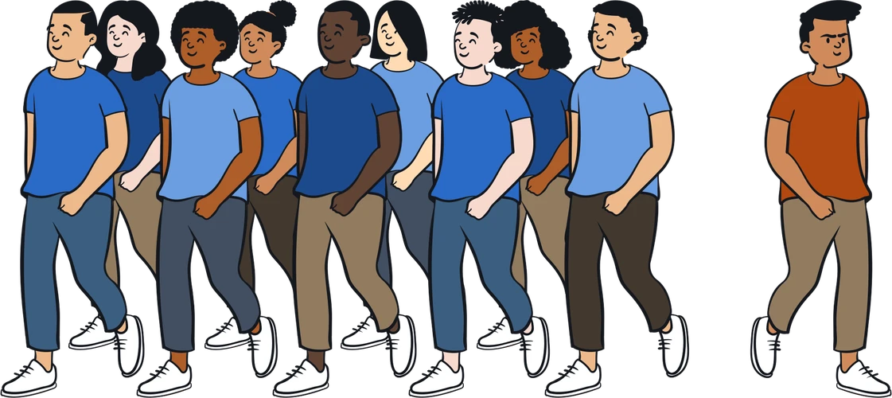
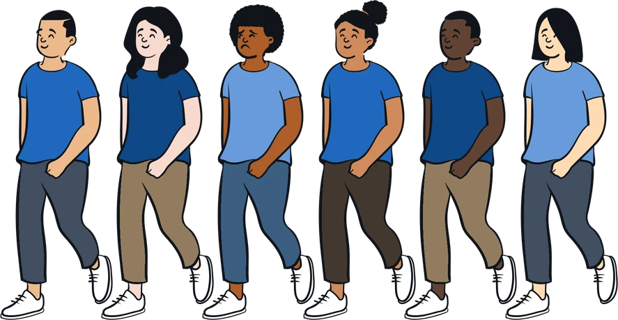
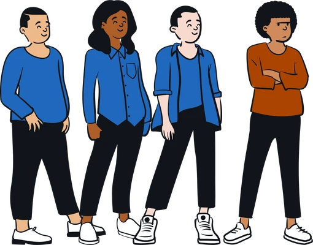
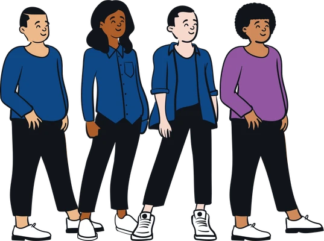
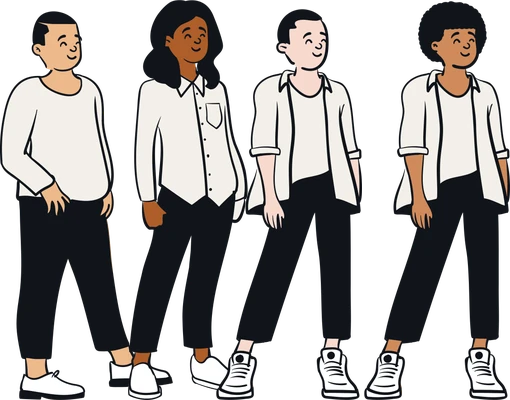
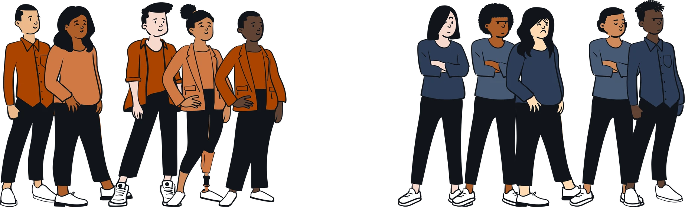
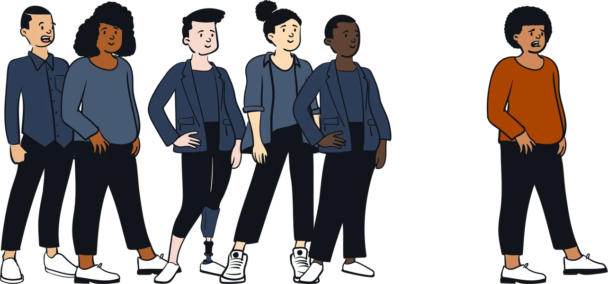
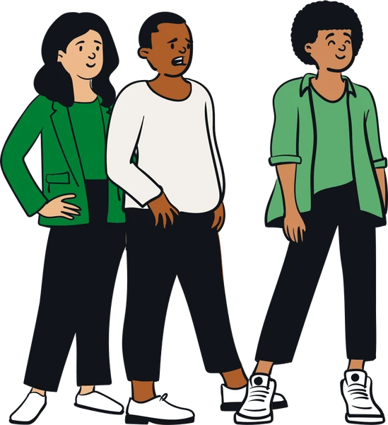
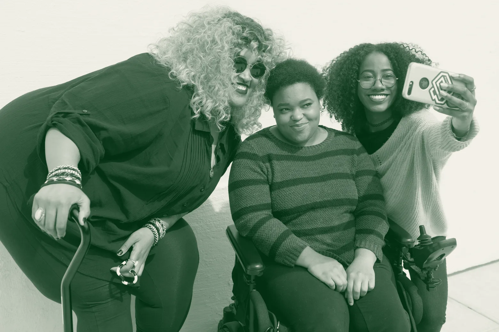

Jak grupa nas wspiera, naciska i wyklucza.


Podporządkowujesz się grupie i zmieniasz zdanie pod jej naciskiem, choć się z nią nie zgadzasz.
Nie przyjmujesz norm tylko dlatego, że inni je przyjęli. Żyjesz według własnych przekonań.
Podporządkowujesz się grupie, choć jej oczekiwania kłócą się z twoimi przekonaniami.
np.Śmiejesz się z żartu, który cię nie bawi, bo śmieje się cała klasa.

Upodabniasz się i dopasowujesz do reszty grupy.
np.Ubierasz się i mówisz tak jak paczka, do której chcesz należeć.

Normy i wartości grupy uznajesz za własne. Najgłębsza forma.
np.Po czasie naprawdę myślisz tak jak grupa i bronisz jej zdania.

Portale są dla mnie źródłem wiedzy o wyglądzie i ubiorzeogółem 50%
Przeglądając media, czuję presję, żeby poprawiać wyglądogółem 27%
Po publikacji zdjęcia lub filmiku stresuję się, jak zostanie ocenioneogółem 37%
Używam filtrów albo poprawiam wygląd na zdjęciachogółem 32%
grupa własnaidealizujemy bez krytyki
grupa obcaoceniamy surowo i powierzchownie
Dzielimy ludzi na grupy, często na podstawie pozornych różnic.
Należenie do „lepszej” grupy podnosi nam samoocenę.
Rośnie rywalizacja między grupami, a to sprzyja dyskryminacji.


Art. 32Konstytucja RPNikt nie może być dyskryminowany.
Uproszczone, trudne do zmiany wyobrażenie o członkach grupy. Porządkuje świat, ale czyni nas podatnymi na manipulację.
Niechęć albo wrogość wobec grupy, często uzasadniana stereotypem.
Gorsze traktowanie ludzi tylko dlatego, że należą do tej grupy.
Odbieranie innym człowieczeństwa, uczuć i godności.
Własna grupa etniczna albo narodowa jako miara wszystkich innych.
Wina za złożone problemy, np. kryzys, zrzucona na jedną grupę.
Obraźliwe i raniące opinie wyrażane w internecie.
Wypowiedzi publiczne albo w sieci, które szerzą nietolerancję, ksenofobię, nienawiść rasową i dyskryminację.
Bez wulgaryzmów i agresji. Nie reaguj impulsywnie, nawet w emocjach.
Brak odpowiedzi odbiera mu satysfakcję. Hejt na hejt to eskalacja.
Tak ograniczasz zasięg obraźliwych treści.
Hejter nie jest bezkarny, nawet gdy pisze anonimowo.
Rodzic, psycholog szkolny, wychowawca albo telefon zaufania.
Dbaj o kulturę w sieci, dołącz do kampanii przeciw mowie nienawiści.
Każdy poziom stoi na niższym. Reaguj już przy żartach.
Allport zbadał, co doprowadziło m.in. do Holokaustu, ludobójstwa w Rwandzie i czystek etnicznych na Bałkanach.
Przerwij, odwołaj się do wspólnych zasad.
Porozmawiaj ze sprawcą na osobności, nie na forum.
Wesprzyj osobę skrzywdzoną.
Powiedz wprost: Przeszkadza mi, kiedy mówisz o nich w taki sposób.
Oceniaj zachowanie, nie osobę.
Wymagaj od innych tego, czego wymagasz od siebie.
Dopytaj: Co dokładnie masz na myśli?
Szukaj innych punktów widzenia i wspólnych wartości.
Ustal fakty, przejdź do konkretnych doświadczeń.

to·le·ran·cja z łac. tolerare: znosić, wytrzymywać
Szacunek dla cudzych poglądów, wierzeń, zwyczajów i zachowań.
Nikomu nie odbierasz prawa do udziału w życiu społecznym. Możecie się różnić, rozmawiać i szukać porozumienia, a każdy zostaje sobą.

Masz pytanie albo coś do dodania? Teraz jest na to czas.
Do zobaczenia!